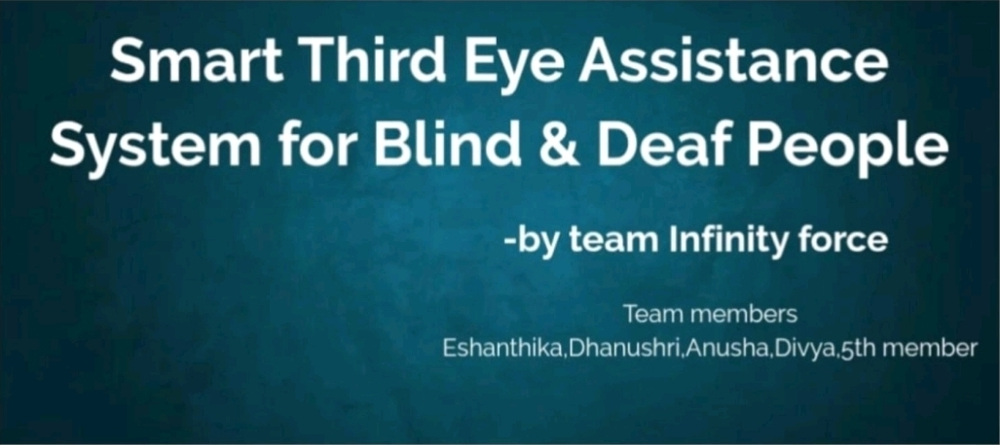
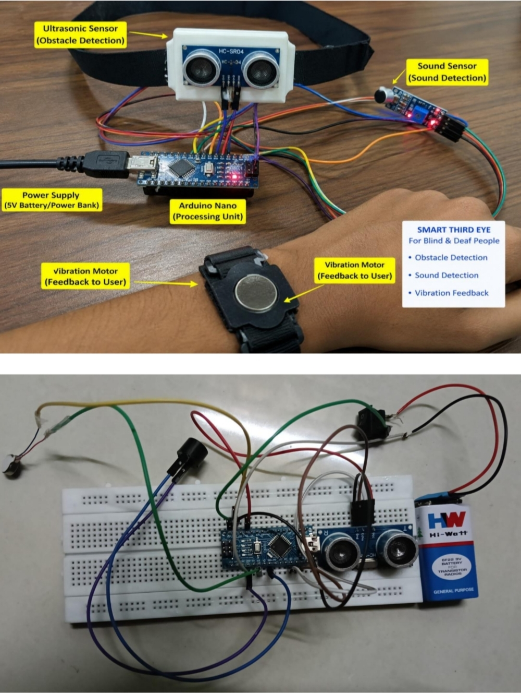

Third Eye is an assistive technology project designed to support visually impaired and deaf individuals in their daily lives. The system focuses on improving independence, safety, and communication using smart sensors and real-time feedback mechanisms. It helps users detect nearby obstacles, understand their surroundings better, and receive alerts through audio or vibration signals. The main goal of this project is to make everyday movement easier and more accessible for differently-abled people by using simple and effective technology.

